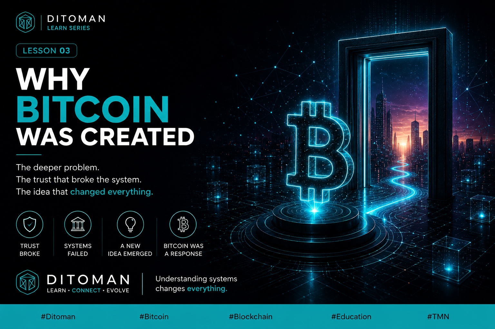

Bitcoin was not created just to become another digital asset. It emerged from a deeper global trust problem involving institutions, control, permission, and centralized systems.
Most people think Bitcoin was created to become a digital coin.
It wasn’t.
Bitcoin was born from a deeper problem.
A world where trust depended too much on institutions, control, and permission.
Banks. Governments. Systems.
When that trust broke, a new idea emerged.
A system where rules are visible.
Where transactions are verifiable.
Where no single entity controls the network.
Bitcoin was not just innovation.
It was a response.
A signal that money could become native to the internet.
Without gatekeepers. Without centralized control.
This shift is bigger than money.
It changes how we understand trust, value, and systems.
We’re starting from the fundamentals.
Learn. Connect. Evolve.
بیشتر مردم فکر میکنند بیتکوین فقط برای ساختن یک پول دیجیتال به وجود آمد.
اما اینطور نیست.
بیتکوین پاسخی بود به یک مشکل عمیقتر.
دنیایی که در آن اعتماد بیش از حد وابسته به نهادها، کنترل مرکزی و اجازه گرفتن بود.
بانکها. دولتها. سیستمها.
وقتی این اعتماد از بین رفت، یک ایده جدید شکل گرفت.
سیستمی با قوانین شفاف.
تراکنشهای قابل بررسی.
و بدون کنترل یک نهاد واحد.
بیتکوین فقط یک نوآوری نبود.
یک پاسخ بود.
نشانهای از اینکه پول میتواند بومی اینترنت شود.
بدون واسطه و بدون کنترل مرکزی.
این تغییر فقط درباره پول نیست.
نگاه ما به اعتماد، ارزش و سیستمها را تغییر میدهد.
ما از پایهها شروع میکنیم.
یاد بگیر. وصل شو. رشد کن.
Bitcoin introduced systems where trust could move from institutions toward transparent rules and networks.
Transactions became visible and verifiable through distributed ledgers.
No single authority controls the network or owns participation.
Bitcoin showed that value could move digitally without centralized gatekeepers.
“Bitcoin was not just innovation. It was a response.”
Learn why Bitcoin emerged after growing distrust toward centralized systems.
Explore how systems can function without a central controller.
Learn why visible rules and verification matter in digital networks.
Discover the deeper ideas behind blockchain and digital value systems.